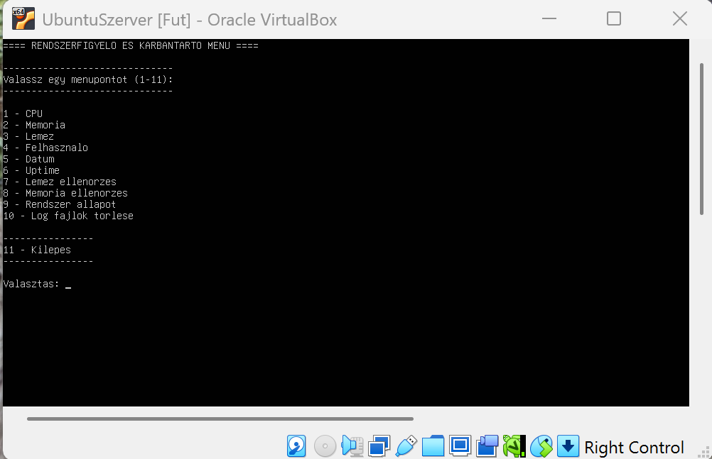
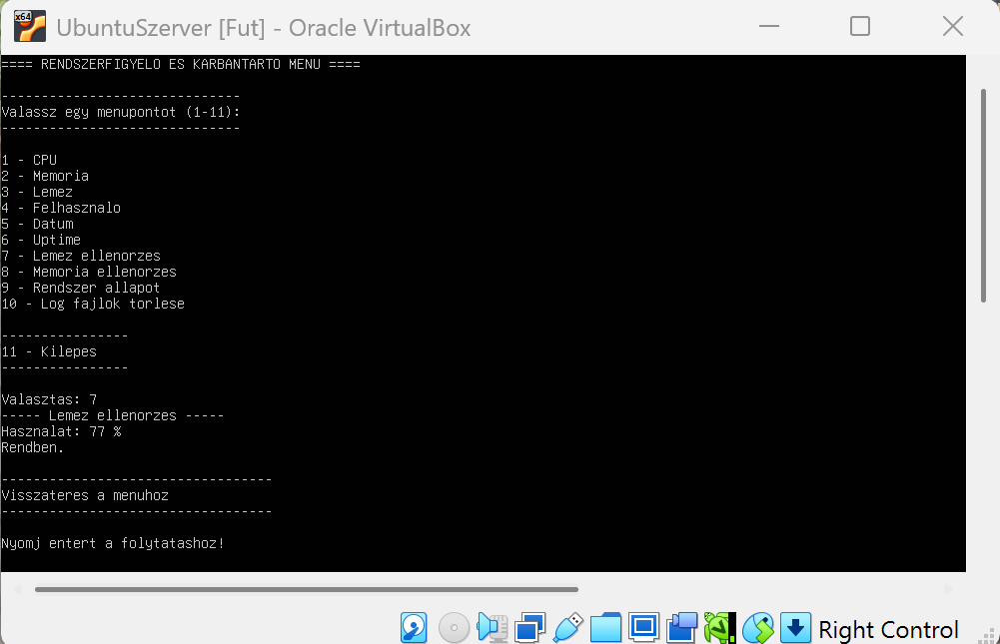
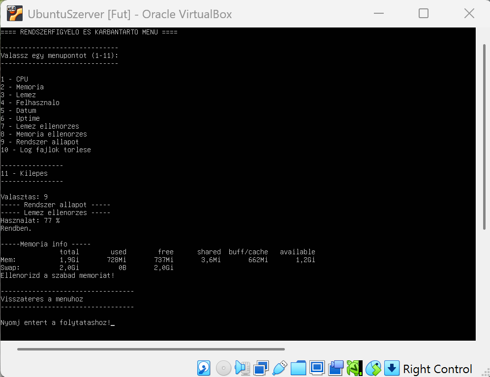

Ez a program egy Linux alatt futó, menüvezérelt shell script, amely rendszerinformációk megjelenítésére, valamint alapvető ellenőrzési és karbantartási feladatok elvégzésére szolgál.
A program indítás után egy menüt jelenít meg, ahol a felhasználó kiválaszthatja a kívánt műveletet. A script minden művelet után visszatér a főmenübe, így folyamatosan használható.
Főmenü:

Lemez ellenőrzés példa:

Rendszer állapot példa:

A script fájl letölthető innen:
Ha nem töltődik le, jobb klikk → Link mentése másként